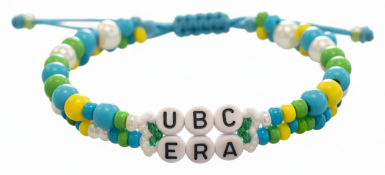

Programming, problem solving, and algorithms
CPSC 203, 2026 W1
September 29, 2026
Announcements
- Take examlet 1 in ORCA between Thursday Oct 1 and Monday Oct 5.
- Book your slot for examlet 2.
Quick recap: Dataclasses
A dataclass bundles related data together into a custom type.
- Attributes: data stored in the object (
radius, colour)
- Methods: functions that belong to the class (
diameter)
A bead bracelet

What data describes a bead?
What data describes a bracelet?
Creating a Bracelet
Adding a Method
Does it Fit?
We choose to say that the beads fit on the bracelet if the sum of their diameters is less than or equal to the circumference of the bracelet.
We will refer to any extra string as slack.
How Much Slack?
Adding beads safely
We only want to add a bead if it fits!
Removing beads
What if we want to swap out a bead?
Useful Python: Removing Elements from a List
Lists have a method called pop(index) that removes and returns the item at that index.
- Like
append, pop mutates the list.
- Unlike
append, pop returns something other than None.
Drawing the bracelet
In the activity workspace we provide some code to draw the bracelet.
- We will not expect you to write such code, but we will expect you to run it if we provide it.
The full picture
@dataclass
class Bead:
radius: float
colour: tuple[int, int, int]
def diameter(self) -> float: ...
def draw(self, ax, x: float, y: float) -> None: ...
@dataclass
class Bracelet:
radius: float
beads: list[Bead]
def circumference(self) -> float: ...
def slack(self) -> float: ...
def string_bead(self, bead: Bead) -> bool: ...
def remove_bead(self, index: int) -> Bead: ...
def draw(self) -> None: ...
Your turn: Implement Bracelet
Try the Bracelet Activity (continued) on PrairieLearn!
Implement these methods:
circumference() - return \(2 \pi r\).slack() - circumference minus total bead diameters.string_bead(bead) - add bead if it fits, return True/False.remove_bead(index) - remove and return the bead at index.
If you finish early, try Tasks 4 & 5 (brighten methods)!
Extending functionality: Name bracelets
What if we want to make a friendship bracelet with someone’s name on it?
- Let’s create a bead that can hold a letter.
Adding letters to beads
Let’s add an optional letter attribute to our Bead class:
Useful Python: the enumerate() Function
Sometimes you want both the index and the value of each element as you iterate through a list.
enumerate() gives you tuples of (index, value) as you loop.
Naming a bracelet
Add a name() method to Bracelet that assigns letters to existing beads:
Why reversed? So the name reads correctly around the circle!
Your turn: Letter beads
Back to PrairieLearn - try Task 6: Letter Beads!
Design Strategies
Identify the objects in your problem (nouns).
List the data each object needs (attributes).
List the operations each object supports (methods).
Decide which object is responsible for what.
Implement and test incrementally.